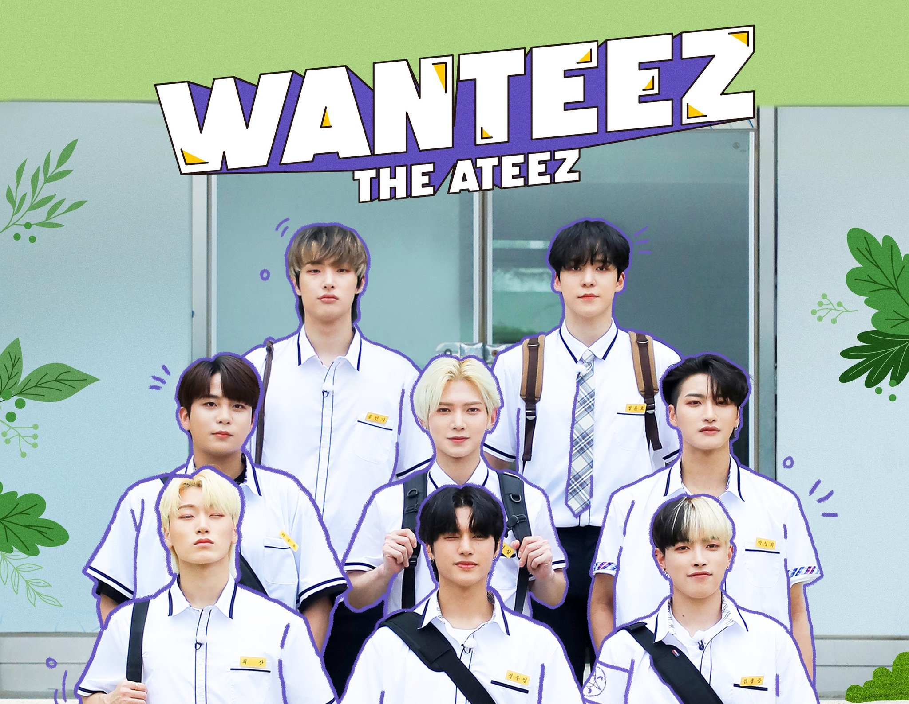
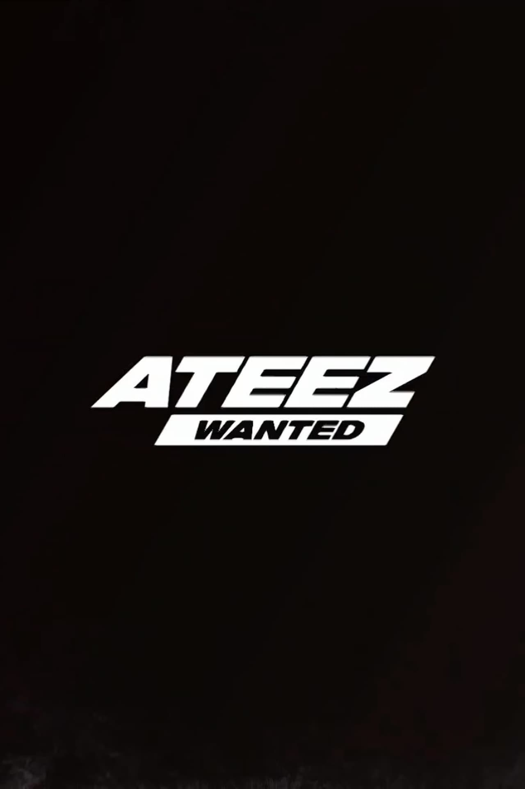
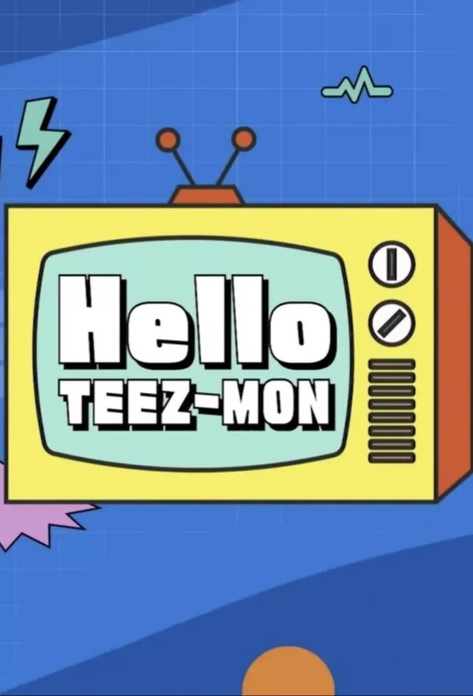

WANTEEZ BY ATEEZ Avec: Kim Hongjoong, Park Seonghwa, Jeong Yunho, Kang Yeosang, Choi San, Song Mingi, Jung Wooyoung et Choi Jongho Episodes: 15 et toujours en cours Résumé: 1: Premier jour de transfert, qu'est-il arrivé à ATEEZ qui allait à l'école le cœur battant⁉👀. 2: 5, 4, 3, 2, 1 La cloche a sonné ! 🔔 3: 👊Sh-shsh shshsh- 4: Interrogez votre ami à côté de vous. 5: C'était un joyeux Chuseok~ 6: Voici le Jeon~ 7: Je n'aime pas les enfants populaires🙄 8: WANTEEZ sera de retour avec de nouveaux épisodes♥ 9: Docteur, pourriez-vous leur prescrire un sédatif ? 10: Mais ma force mentale ? P.R.O. Je ne m'effondre pas. 11: Je vois que vous regardez mon HANYAK voir👀 12: Maman et papa, je suis à la télé maintenant✌ 13: Le niveau de difficulté est aussi élevé que celui de MOUNTAIN CHOI. 14: J'ouvre les yeux sur un tout nouveau monde♠ 15: 👄Je promets d'envoyer immédiatement 1 million de won au juge si je fais une fausse déclaration
WANTED SPECIAL BY ATEEZ Avec: Kim Hongjoong, Park Seonghwa, Jeong Yunho, Kang Yeosang, Choi San, Song Mingi, Jung Wooyoung et Choi Jongho Episodes: 10 et Bonus Résumé: Les membres de ATEEZ partiront pour un voyage de 2 jours et 1 nuit autour de Daegu, en accomplissant les missions qui leur seront confiées, tout en profitant de la beauté de Daegu.

ATEEZ FEVER ROAD BY ATEEZ Avec: Kim Hongjoong, Park Seonghwa, Jeong Yunho, Kang Yeosang, Choi San, Song Mingi, Jung Wooyoung et Choi Jongho Episodes: 8 et Bonus Résumé: L'émission à venir aura pour prémisse la découverte par les membres d'ATEEZ d'un espace secret dans lequel un personnage mystérieux a laissé des missions cachées pour eux deux ans auparavant. Les idoles doivent jouer à une variété de jeux divertissants tout en résolvant le mystère de la personne qui a laissé ces missions pour eux et de la raison pour laquelle elles ont provoqué certains événements.

ATEEZ WANTED BY ATEEZ Avec: Kim Hongjoong, Park Seonghwa, Jeong Yunho, Kang Yeosang, Choi San, Song Mingi, Jung Wooyoung et Choi Jongho Episodes: 8 Résumé: Les membres d’ATEEZ partent pour un voyage de 2 jours et 1 nuit autour de Séoul dans leur bateau pirate. Leur but ultime est de trouver le trésor caché quelque part dans Séoul. Pour ce faire, ils doivent accomplir cinq quêtes pour devenir des rois pirates et recevoir leur dernier indice.
HELLO TEEZ-MON BY ATEEZ Avec: Kim Hongjoong, Park Seonghwa, Jeong Yunho, Kang Yeosang, Choi San, Song Mingi, Jung Wooyoung et Choi Jongho Episodes: 11 Résumé: Les Atiny attendaient. Les membres d’Ateez l’ont fait. Processus de création des mascottes Teez-mon par les membres eux-mêmes.
ATEEZ LOG BOOK BY ATEEZ Avec: Kim Hongjoong, Park Seonghwa, Jeong Yunho, Kang Yeosang, Choi San, Song Mingi, Jung Wooyoung et Choi Jongho Episodes: 110 Résumé: Vlog des membres d’Ateez dans les coulisses du groupe.

KQ FELLAZ BY ATEEZ Avec: Kim Hongjoong, Park Seonghwa, Jeong Yunho, Kang Yeosang, Choi San, Song Mingi, Jung Wooyoung et Choi Jongho Episodes: 19 Résumé: Découvrez les membres de Ateez pre debut ainsi que leur voyage tout au long de leur formation en Amérique.
TREASURE FILM BY ATEEZ Avec: Kim Hongjoong, Park Seonghwa, Jeong Yunho, Kang Yeosang, Choi San, Song Mingi, Jung Wooyoung et Choi Jongho Episodes: 3 Résumé: Les garçons devront relever 16 défis différents - 8 défis individuels et 8 défis de groupe. L'émission de téléréalité a été filmée en Australie et à Los Angeles.